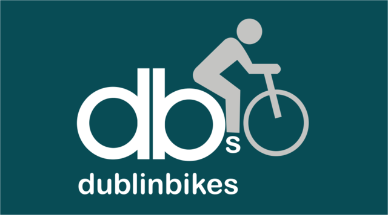
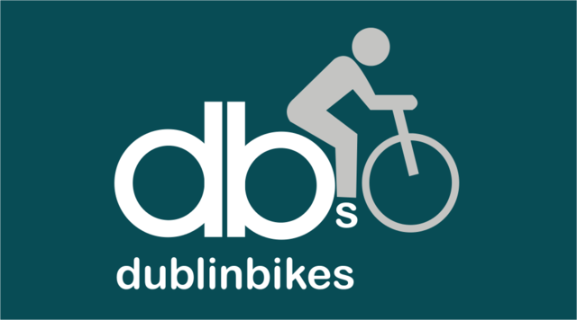

Dublin, capital of the Republic of Ireland, is on Ireland’s east coast at the mouth of the River Liffey. With a history dating back to the 9th century, Dublin today has a population estimated at 565,000 in 2014, with a metropolitan population of 1.8 million.By 2020, the Central Statistics Office predicts the Dublin Region will reach a population of 2.1 million by 2020, with Dublin City will have a population of 610,000. By 2031, the Dublin population could surpass 5 million, with most people living in the greater Dublin area of Dublin, Kildare, Meath and Wicklow rather than the other regions. With increasing Population , there is a need for a better cross city Transportation to facilitate the people moving around. This project aims at solving the current transportation problems and providing a better solution for future. The National Transport Authority (Irish: Údarás Náisiúnta Iompair) or NTA is the transport authority for Greater Dublin and the public transport licensing agency for Ireland. It was established under the provisions of the Dublin Transport Authority Act (2008) and the Public Transport Regulation Act (2009), on 1 December 2009. The NTA operates under the consumer facing brand Transport for Ireland.
Currently supports DublinBus and DublinBikes only.Click the logos or navigation bar to view the respective dashboards.